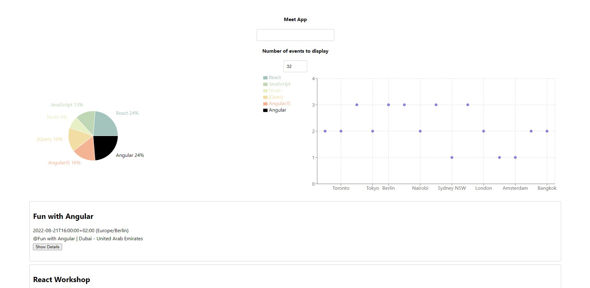
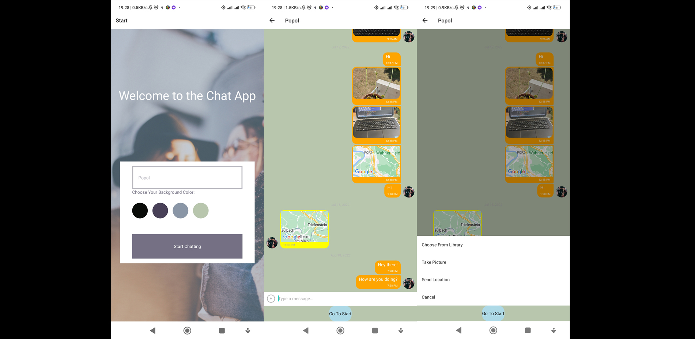
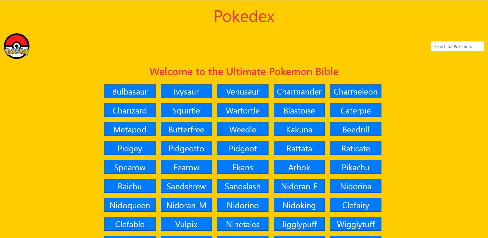
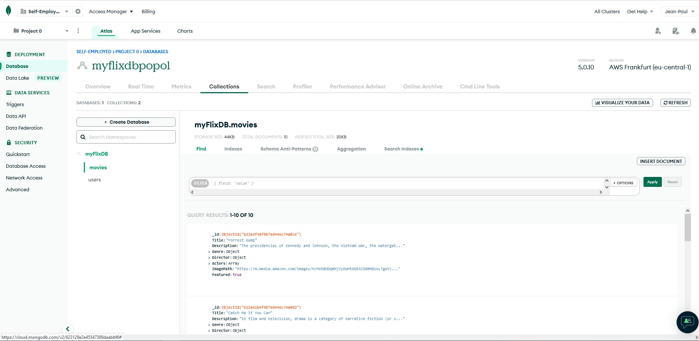

Why I learned to code
It has been a long time that I had the personal wish to build my own website from scratch to display my photographs. However, only in 2021 did I get to know that it was possible to learn web development from scratch at a coding bootcamp! I took the opportunity and could not only gain the needed skills to finally build my own page to my personal taste, but also this training made it possible to switch my professional career into the IT industry.
Technologies
HTML, CSS, SCSS, Bootstrap
JavaScript, TypeScript, Angular
React, React-Redux, React-Native
jQuery, Node.js, Express
Mongoose, MongoDB, PostgreSQL
Postman, Heroku, Netlify, Firebase, AWS
Expo, Chart.js, Jest, Git, GitHub
Web Development Projects
During nine months I have been learning coding from scratch at an online coding bootcamp based in Berlin. I have been supported and guided by a tutor as well as a mentor which both have several years of experience within the industry. Besides learning how to code, I completed several coding projects during the course which can be discovered in the below section.
myFlix Angular Client

myFlix Angular Client is the frontend-side of a movies web application. The application provides users with access to information about different movies, their directors and the movie genre. Users are able to sign up, update their personal information, create a list of their favorite movies and remove movies from their favorite list. The application is written in Angular.
Angular Material
TypeDoc
Meet
Meet is an application for users to find events based on their location. It is a serverless progressive web application ("PWA") using React and built using test-driven development ("TDD") technique. The application uses the Google Calendar API to fetch upcoming events.
Cucumber
Puppeteer
Recharts
Google Calendar API & OAuth2
Chat App
Chat App was built for mobile devices using React Native. The app provides users with a chat interface and options to share images and their location.
Expo
Google Firestore
Pokedex
Pokedex is a small web application built with HTML, CSS and JavaScript, which loads data from an external API and enables viewing detailed data.
myFlix API
myFlix API is the server-side of a movies web application. The application provides users with access to information about different movies, their directors and the movie genre. Users are able to sign up, update their personal information, create a list of their favorite movies and remove movies from their favorite list.
MongoDB
myFlix Client

myFlix Client is the frontend-side of a movies web application. The application provides users with access to information about different movies, their directors and the movie genre. Users are able to sign up, update their personal information, create a list of their favorite movies and remove movies from their favorite list.
React-Redux